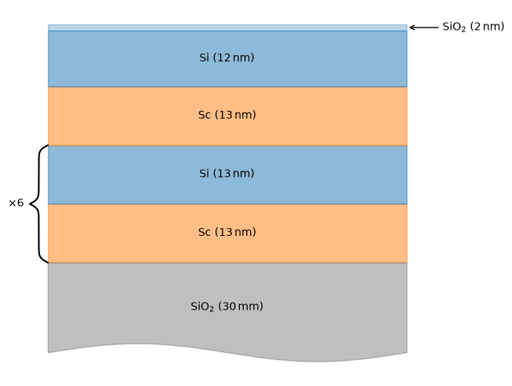
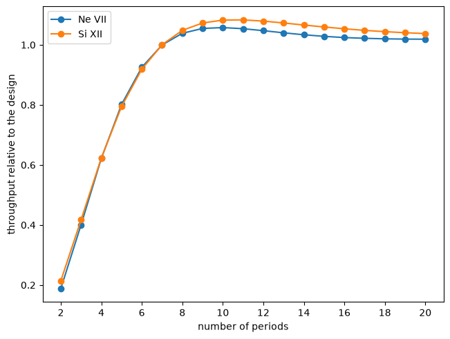
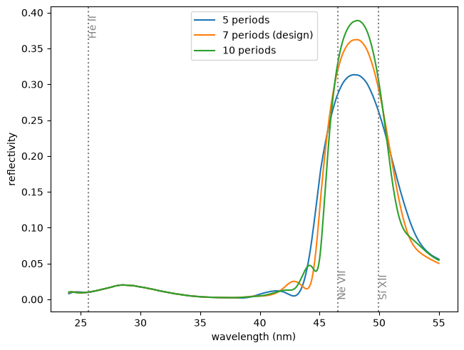
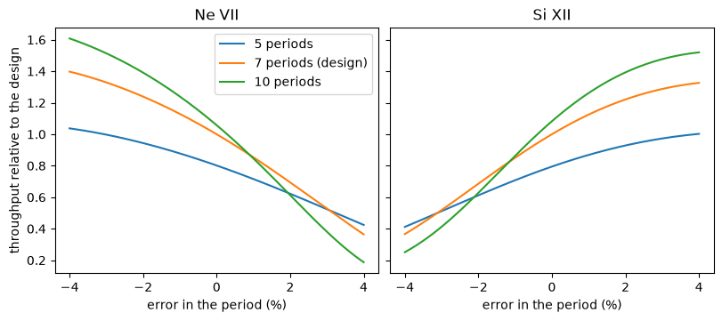
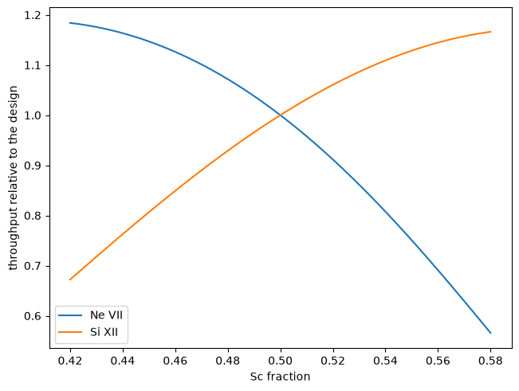

Coating Study#
The primary mirror and the gratings of ESIS-II are coated with a multilayer
of Si and Sc,
multilayer_SiSc().
Its design has seven periods.
More periods reflect more of the two lines,
but make a thicker coating,
with more stress in it,
so seven periods balance the two.
The test sample which Eric Gullikson measured,
multilayer_SiSc_sample_measured(),
has ten.
This report compares coatings with different numbers of periods, finds how closely the period of each has to be held, checks the fraction of each period which is Sc, and collects the parameters of the design into a specification which can be sent to the coater.
[1]:
import dataclasses
import numpy as np
import scipy.optimize
import matplotlib.ticker
import matplotlib.pyplot as plt
import astropy.units as u
import astropy.visualization
import pandas
import named_arrays as na
import optika
import esis
The Design#
Load the design of the coating and draw its layers.
Its top layer is Si under a native oxide,
and the widths of its interfaces are those fit to the measurement of the
sample,
multilayer_SiSc_sample_fit().
[2]:
design = esis.flights.f2.optics.materials.multilayer_SiSc()
with astropy.visualization.quantity_support():
fig, ax = plt.subplots(constrained_layout=True)
design.plot_layers(
ax=ax,
thickness_substrate=20 * u.nm,
)
ax.set_axis_off()
ax.autoscale_view()

To change the number of periods, the period, or the fraction of each period which is Sc, replace the thicknesses of the layers of the design, keeping the thickness of the top Si layer which the oxide consumed.
[3]:
oxide, top, Sc, periodic = design.layers
Si_period, Sc_period = periodic.layers
period_design = Si_period.thickness + Sc_period.thickness
num_periods_design = periodic.num_periods + 1
fraction_Sc = (Sc_period.thickness / period_design).to(u.dimensionless_unscaled)
thickness_consumed = Si_period.thickness - top.thickness
def coating(
num_periods: int,
period: u.Quantity,
fraction: float | u.Quantity = fraction_Sc,
) -> optika.materials.MultilayerMirror:
"""
The design, with the given number of periods, period and fraction of Sc.
Parameters
----------
num_periods
The number of periods, at least two.
period
The thickness of a period, a layer of Si and a layer of Sc.
fraction
The thickness of the Sc layer of a period divided by the period.
"""
thickness_Si = (1 - fraction) * period
thickness_Sc = fraction * period
return dataclasses.replace(
design,
layers=[
oxide,
dataclasses.replace(top, thickness=thickness_Si - thickness_consumed),
dataclasses.replace(Sc, thickness=thickness_Sc),
dataclasses.replace(
periodic,
layers=[
dataclasses.replace(Si_period, thickness=thickness_Si),
dataclasses.replace(Sc_period, thickness=thickness_Sc),
],
num_periods=num_periods - 1,
),
],
)
def period(multilayer: optika.materials.MultilayerMirror) -> u.Quantity:
"""
The period of a multilayer made by :func:`coating`.
Parameters
----------
multilayer
The multilayer to measure.
"""
return sum(layer.thickness for layer in multilayer.layers[~0].layers).to(u.nm)
def thickness(multilayer: optika.materials.MultilayerMirror) -> u.Quantity:
"""
The total thickness of the layers of a multilayer, its oxide included.
Parameters
----------
multilayer
The multilayer to measure.
"""
return sum(layer.thickness for layer in multilayer.layers).to(u.nm)
def reflectivity(
multilayer: optika.materials.MultilayerMirror,
wavelength: u.Quantity | na.AbstractScalar,
angle: u.Quantity | na.AbstractScalar = 0 * u.deg,
) -> na.AbstractScalar:
"""
The reflectivity of a multilayer to unpolarized light.
Parameters
----------
multilayer
The multilayer which reflects the light.
wavelength
The wavelength of the light in vacuum.
angle
The angle of incidence.
"""
rays = optika.rays.RayVectorArray(
wavelength=wavelength,
direction=na.Cartesian3dVectorArray(np.sin(angle), 0, np.cos(angle)),
)
return multilayer.efficiency(
rays=rays,
normal=na.Cartesian3dVectorArray(0, 0, -1),
)
print(f"{num_periods_design} periods of {period_design:.2f}, Sc fraction {fraction_Sc:.2f}")
7 periods of 26.13 nm, Sc fraction 0.50
The two lines ESIS-II observes are Ne VII 46.5 nm and Si XII 49.9 nm. The coating should also reflect little at He II 25.6 nm, since the gratings send its second order to where they send the first order of a wavelength twice as long, which is inside the passband.
[4]:
f2 = esis.flights.f2
wavelength_He_II = 256.317 * u.AA
wavelength = na.ScalarArray(
ndarray=u.Quantity(
[
wavelength_He_II,
f2.wavelength_Ne_VII,
f2.wavelength_Si_XII,
]
).to(u.nm),
axes="line",
)
names = ["He II", "Ne VII", "Si XII"]
instrument = f2.optics.design_single(num_distribution=0)
print(
f"passband: {na.as_named_array(instrument.wavelength_min).ndarray.to(u.nm):.1f} "
f"to {na.as_named_array(instrument.wavelength_max).ndarray.to(u.nm):.1f}"
)
print(f"second order of He II: {2 * wavelength_He_II.to(u.nm):.1f}")
passband: 43.0 nm to 53.4 nm
second order of He II: 51.3 nm
Angles of Incidence#
The coating reflects the light a few degrees from the normal. Trace rays at both lines through one channel of the design, from every position in the field and the pupil, and take the angle of incidence on each optic as half the angle through which it turns the rays, which on a mirror is the angle of incidence itself.
[5]:
system = instrument.system
rays = system.raytrace(
wavelength=wavelength[{"line": slice(1, None)}],
efficiency=False,
).outputs
names_surface = [surface.name for surface in system.surfaces_all]
unvignetted = rays.unvignetted[{system.axis_surface: ~0}]
def angle_incidence(name: str) -> na.AbstractScalar:
"""
Half the angle through which the named surface turns the rays, or NaN
for the rays which do not reach the sensor.
Parameters
----------
name
The name of the surface.
"""
index = names_surface.index(name)
before = rays.direction[{system.axis_surface: index - 1}]
after = rays.direction[{system.axis_surface: index}]
cos = -(before @ after) / (before.length * after.length)
angle = (np.arccos(cos) / 2).to(u.deg)
return np.where(unvignetted, angle, np.nan * u.deg)
angle = {name: angle_incidence(name) for name in ["primary", "grating"]}
pandas.DataFrame(
{
"min (deg)": [np.nanmin(a).ndarray.value for a in angle.values()],
"mean (deg)": [np.nanmean(a).ndarray.value for a in angle.values()],
"max (deg)": [np.nanmax(a).ndarray.value for a in angle.values()],
},
index=list(angle),
).round(2)
[5]:
| min (deg) | mean (deg) | max (deg) | |
|---|---|---|---|
| primary | 0.64 | 1.03 | 1.35 |
| grating | 1.64 | 2.10 | 2.45 |
Compare the reflectivity of the design at the largest of these angles with that at normal incidence.
[6]:
angle_max = max(np.nanmax(a).ndarray for a in angle.values())
ratio = reflectivity(design, wavelength, angle_max) / reflectivity(design, wavelength)
print(f"at {angle_max:.2f}, relative to normal incidence:")
for name, r in zip(names, ratio.ndarray):
print(f" {name}: {r:.3f}")
at 2.45 deg, relative to normal incidence:
He II: 0.996
Ne VII: 1.006
Si XII: 0.990
The change is small, so the rest of this report computes the reflectivity at normal incidence.
Number of Periods#
More periods narrow the peak of the reflectivity, so for each number of periods, choose the period which maximizes the geometric mean of the reflectivity at the two lines, keeping the fraction of each period which is Sc.
[7]:
def period_best(
num_periods: int,
fraction: float | u.Quantity = fraction_Sc,
) -> u.Quantity:
"""
The period which maximizes the geometric mean of the reflectivity at
Ne VII and Si XII, for the given number of periods and fraction of Sc.
Parameters
----------
num_periods
The number of periods.
fraction
The thickness of the Sc layer of a period divided by the period.
"""
def merit(period: float) -> float:
r = reflectivity(coating(num_periods, period * u.nm, fraction), wavelength)
return -np.sqrt(r[{"line": 1}] * r[{"line": 2}]).ndarray
result = scipy.optimize.minimize_scalar(
merit,
bounds=(24, 28),
method="bounded",
options=dict(xatol=1e-3),
)
return result.x * u.nm
num_periods = list(range(2, 21))
coatings = {n: coating(n, period_best(n)) for n in num_periods}
reflectivities = na.stack(
[reflectivity(c, wavelength) for c in coatings.values()],
axis="num_periods",
)
Tabulate the period, the total thickness, and the reflectivity at each line of each coating. The throughput of the two bounces, off the primary mirror and off the grating, is the square of the reflectivity of one, and is given relative to that of the design. The last column is the throughput at He II relative to that at Si XII, which scales the light of He II which leaks into the image of Si XII.
[8]:
r_design = reflectivity(design, wavelength)
throughput = np.square(reflectivities / r_design)
r = reflectivities
table = pandas.DataFrame(
{
"period (nm)": [period(c).value for c in coatings.values()],
"thickness (nm)": [thickness(c).value for c in coatings.values()],
"R Ne VII": r[{"line": 1}].ndarray,
"R Si XII": r[{"line": 2}].ndarray,
"R He II": r[{"line": 0}].ndarray,
"throughput Ne VII": throughput[{"line": 1}].ndarray,
"throughput Si XII": throughput[{"line": 2}].ndarray,
"(R He II / R Si XII)^2": np.square(r[{"line": 0}] / r[{"line": 2}]).ndarray,
},
index=pandas.Index(num_periods, name="periods"),
)
table.style.format(
{
"period (nm)": "{:.2f}",
"thickness (nm)": "{:.0f}",
"R Ne VII": "{:.3f}",
"R Si XII": "{:.3f}",
"R He II": "{:.4f}",
"throughput Ne VII": "{:.3f}",
"throughput Si XII": "{:.3f}",
"(R He II / R Si XII)^2": "{:.1e}",
}
)
[8]:
| period (nm) | thickness (nm) | R Ne VII | R Si XII | R He II | throughput Ne VII | throughput Si XII | (R He II / R Si XII)^2 | |
|---|---|---|---|---|---|---|---|---|
| periods | ||||||||
| 2 | 26.91 | 55 | 0.138 | 0.136 | 0.0114 | 0.188 | 0.214 | 7.0e-03 |
| 3 | 26.46 | 80 | 0.202 | 0.190 | 0.0125 | 0.401 | 0.417 | 4.3e-03 |
| 4 | 26.26 | 106 | 0.252 | 0.232 | 0.0106 | 0.622 | 0.623 | 2.1e-03 |
| 5 | 26.17 | 132 | 0.286 | 0.262 | 0.0098 | 0.802 | 0.795 | 1.4e-03 |
| 6 | 26.14 | 158 | 0.307 | 0.282 | 0.0099 | 0.925 | 0.919 | 1.2e-03 |
| 7 | 26.13 | 184 | 0.319 | 0.294 | 0.0101 | 1.000 | 1.000 | 1.2e-03 |
| 8 | 26.13 | 210 | 0.326 | 0.301 | 0.0101 | 1.038 | 1.048 | 1.1e-03 |
| 9 | 26.14 | 236 | 0.328 | 0.305 | 0.0101 | 1.055 | 1.073 | 1.1e-03 |
| 10 | 26.14 | 262 | 0.328 | 0.306 | 0.0101 | 1.058 | 1.083 | 1.1e-03 |
| 11 | 26.15 | 288 | 0.328 | 0.306 | 0.0101 | 1.054 | 1.083 | 1.1e-03 |
| 12 | 26.15 | 315 | 0.327 | 0.306 | 0.0101 | 1.047 | 1.079 | 1.1e-03 |
| 13 | 26.15 | 341 | 0.326 | 0.305 | 0.0101 | 1.040 | 1.073 | 1.1e-03 |
| 14 | 26.16 | 367 | 0.325 | 0.304 | 0.0101 | 1.034 | 1.066 | 1.1e-03 |
| 15 | 26.16 | 393 | 0.324 | 0.303 | 0.0101 | 1.028 | 1.060 | 1.1e-03 |
| 16 | 26.16 | 419 | 0.323 | 0.302 | 0.0101 | 1.024 | 1.054 | 1.1e-03 |
| 17 | 26.16 | 446 | 0.323 | 0.301 | 0.0101 | 1.022 | 1.048 | 1.1e-03 |
| 18 | 26.16 | 472 | 0.323 | 0.301 | 0.0101 | 1.020 | 1.044 | 1.1e-03 |
| 19 | 26.16 | 498 | 0.322 | 0.300 | 0.0101 | 1.019 | 1.040 | 1.1e-03 |
| 20 | 26.16 | 524 | 0.322 | 0.300 | 0.0101 | 1.019 | 1.038 | 1.1e-03 |
The period of the design is the best one for its number of periods, rounded to 0.01 nm.
[9]:
design: 26.130 nm
best for 7 periods: 26.131 nm
Plot the throughput of the two bounces at each line against the number of periods.
[10]:
n = na.ScalarArray(np.array(num_periods), axes="num_periods")
fig, ax = plt.subplots(constrained_layout=True)
for i, color in [(1, "tab:blue"), (2, "tab:orange")]:
na.plt.plot(
n,
throughput[{"line": i}],
ax=ax,
marker="o",
color=color,
label=names[i],
)
ax.xaxis.set_major_locator(matplotlib.ticker.MaxNLocator(integer=True))
ax.set_xlabel("number of periods")
ax.set_ylabel("throughput relative to the design")
ax.legend();

Compare the design with the coatings with five and ten periods. Plot their reflectivities across the passband and around He II.
[11]:
candidates = {
5: coatings[5],
num_periods_design: design,
10: coatings[10],
}
colors = {
5: "tab:blue",
num_periods_design: "tab:orange",
10: "tab:green",
}
def label(num: int) -> str:
"""
The label of the candidate coating with the given number of periods.
Parameters
----------
num
The number of periods.
"""
if num == num_periods_design:
return f"{num} periods (design)"
return f"{num} periods"
wavelength_plot = na.linspace(24, 55, axis="wavelength", num=621) * u.nm
with astropy.visualization.quantity_support():
fig, ax = plt.subplots(constrained_layout=True)
for num, multilayer in candidates.items():
na.plt.plot(
wavelength_plot,
reflectivity(multilayer, wavelength_plot),
ax=ax,
color=colors[num],
label=label(num),
)
# label He II at the top and the two lines at the bottom, where the
# curves are not
for name, w, y, va in [
(names[0], wavelength.ndarray[0], 0.97, "top"),
(names[1], wavelength.ndarray[1], 0.03, "bottom"),
(names[2], wavelength.ndarray[2], 0.03, "bottom"),
]:
ax.axvline(w, color="gray", linestyle=":")
ax.text(
w,
y,
f" {name}",
rotation=90,
va=va,
color="gray",
transform=ax.get_xaxis_transform(),
)
ax.set_xlabel(f"wavelength ({ax.get_xlabel()})")
ax.set_ylabel("reflectivity")
ax.legend();

Tolerance on the Period#
A coating is never deposited with exactly the period it was designed for, and the more periods it has, the narrower its peak. Scale the period of each of the three coatings by up to 4% either way, the same on the primary mirror and the grating, and compare the throughput of the two bounces at each line with that of the design with no error.
[12]:
error = na.linspace(-4, 4, axis="error", num=161) * u.percent
throughput_error = {}
for num, multilayer in candidates.items():
r = na.stack(
[
reflectivity(coating(num, period(multilayer) * (1 + e)), wavelength)
for e in error.ndarray
],
axis="error",
)
throughput_error[num] = np.square(r / r_design)
fig, axs = plt.subplots(
ncols=2,
sharey=True,
constrained_layout=True,
figsize=(8, 3.5),
)
for ax, i in zip(axs, [1, 2]):
for num in candidates:
na.plt.plot(
error,
throughput_error[num][{"line": i}],
ax=ax,
color=colors[num],
label=label(num),
)
ax.set_title(names[i])
ax.set_xlabel("error in the period (%)")
axs[0].set_ylabel("throughput relative to the design")
axs[0].legend();

An error in the period moves the peak toward one line and away from the other, and the more periods a coating has, the narrower its peak. Find the range of errors over which each coating has more throughput at both lines than the one with fewer periods would have with the same error.
[13]:
for more, fewer in [(num_periods_design, 5), (10, num_periods_design)]:
ratio = throughput_error[more] / throughput_error[fewer]
better = (ratio[{"line": slice(1, None)}] > 1).all(axis="line")
e = error.ndarray.value[better.ndarray]
print(f"{more} periods beat {fewer} from {e.min():+.2f}% to {e.max():+.2f}%")
7 periods beat 5 from -3.10% to +3.00%
10 periods beat 7 from -1.15% to +0.85%
Take the tolerance on the period of each coating to be the range of errors over which its throughput at both lines stays within 10% of its own throughput with no error.
[14]:
def tolerance(
throughput: na.AbstractScalar,
error: na.AbstractScalar,
minimum: float = 0.9,
) -> tuple[float | u.Quantity, float | u.Quantity]:
"""
The smallest and largest errors at which the throughput at Ne VII and
Si XII is at least the given fraction of the throughput with no error.
Parameters
----------
throughput
The throughput at each line as a function of the error.
error
The errors, along one axis, with no error in the middle.
minimum
The least acceptable fraction of the throughput with no error.
"""
(axis,) = error.axes
throughput = throughput[{"line": slice(1, None)}]
nominal = throughput[{axis: error.shape[axis] // 2}]
ok = (throughput / nominal >= minimum).all(axis="line")
e = error.ndarray[ok.ndarray]
return e.min(), e.max()
for num in candidates:
low, high = tolerance(throughput_error[num], error)
print(f"{label(num)}: {low.value:+.2f}% to {high.value:+.2f}%")
5 periods: -0.90% to +0.90%
7 periods (design): -0.65% to +0.65%
10 periods: -0.50% to +0.50%
Fraction of Sc#
Half of each period of the design is Sc. For fractions of Sc from 0.3 to 0.7, choose the best period for the number of periods of the design, as above, and tabulate the throughput at each line relative to the design, and the throughput at He II relative to that at Si XII.
[15]:
fractions = np.linspace(0.3, 0.7, num=9)
coatings_fraction = [
coating(num_periods_design, period_best(num_periods_design, f), f)
for f in fractions
]
r = na.stack(
[reflectivity(c, wavelength) for c in coatings_fraction],
axis="fraction",
)
throughput_fraction = np.square(r / r_design)
table = pandas.DataFrame(
{
"period (nm)": [period(c).value for c in coatings_fraction],
"throughput Ne VII": throughput_fraction[{"line": 1}].ndarray,
"throughput Si XII": throughput_fraction[{"line": 2}].ndarray,
"(R He II / R Si XII)^2": np.square(r[{"line": 0}] / r[{"line": 2}]).ndarray,
},
index=pandas.Index(fractions, name="Sc fraction"),
)
table.style.format(
{
"period (nm)": "{:.2f}",
"throughput Ne VII": "{:.3f}",
"throughput Si XII": "{:.3f}",
"(R He II / R Si XII)^2": "{:.1e}",
}
).format_index("{:.2f}")
[15]:
| period (nm) | throughput Ne VII | throughput Si XII | (R He II / R Si XII)^2 | |
|---|---|---|---|---|
| Sc fraction | ||||
| 0.30 | 27.44 | 0.711 | 0.610 | 1.1e-01 |
| 0.35 | 27.12 | 0.854 | 0.775 | 2.4e-02 |
| 0.40 | 26.79 | 0.953 | 0.901 | 5.7e-03 |
| 0.45 | 26.46 | 1.002 | 0.978 | 2.3e-03 |
| 0.50 | 26.13 | 1.000 | 1.000 | 1.2e-03 |
| 0.55 | 25.81 | 0.944 | 0.963 | 5.5e-04 |
| 0.60 | 25.49 | 0.838 | 0.865 | 2.0e-04 |
| 0.65 | 25.18 | 0.688 | 0.713 | 5.6e-05 |
| 0.70 | 24.88 | 0.510 | 0.526 | 1.4e-05 |
Find the fraction and the period which together maximize the geometric mean of the reflectivity at the two lines.
[16]:
def merit(x: np.ndarray) -> float:
"""
The negative of the geometric mean of the reflectivity at Ne VII and
Si XII, for the number of periods of the design.
Parameters
----------
x
The period in nanometers and the fraction of Sc.
"""
r = reflectivity(coating(num_periods_design, x[0] * u.nm, x[1]), wavelength)
return -np.sqrt(r[{"line": 1}] * r[{"line": 2}]).ndarray
result = scipy.optimize.minimize(
merit,
x0=[period_design.to_value(u.nm), fraction_Sc.value],
method="Nelder-Mead",
options=dict(xatol=1e-4, fatol=1e-8),
)
period_and_fraction_best = coating(num_periods_design, result.x[0] * u.nm, result.x[1])
r = reflectivity(period_and_fraction_best, wavelength)
print(f"best: Sc fraction {result.x[1]:.3f}, period {result.x[0]:.2f} nm")
for name, t in zip(names, np.square(r / r_design).ndarray):
print(f" throughput at {name} relative to the design: {t:.3f}")
best: Sc fraction 0.484, period 26.23 nm
throughput at He II relative to the design: 1.235
throughput at Ne VII relative to the design: 1.006
throughput at Si XII relative to the design: 1.000
The best fraction is a little less than half, but it raises the throughput at the two lines by less than 1%, and raises that at He II by about a quarter. The throughput at He II relative to that at Si XII, the last column of the table, falls steadily as the fraction of Sc grows, so the design keeps half.
At a fixed period, more Sc moves the peak toward longer wavelengths, so an error in the fraction trades one line against the other, as an error in the period does. Change the fraction of the design by up to 0.08 either way, keeping its period, and find the tolerance on the fraction the same way as on the period.
[17]:
error_fraction = na.linspace(-0.08, 0.08, axis="error_fraction", num=161)
r = na.stack(
[
reflectivity(
coating(num_periods_design, period_design, fraction_Sc + e),
wavelength,
)
for e in error_fraction.ndarray
],
axis="error_fraction",
)
throughput_error_fraction = np.square(r / r_design)
fig, ax = plt.subplots(constrained_layout=True)
for i, color in [(1, "tab:blue"), (2, "tab:orange")]:
na.plt.plot(
fraction_Sc.value + error_fraction,
throughput_error_fraction[{"line": i}],
ax=ax,
color=color,
label=names[i],
)
ax.set_xlabel("Sc fraction")
ax.set_ylabel("throughput relative to the design")
ax.legend()
low, high = tolerance(throughput_error_fraction, error_fraction)
print(f"tolerance on the Sc fraction: {low:+.3f} to {high:+.3f}")
tolerance on the Sc fraction: -0.027 to +0.022

Specification#
Collect the parameters of the design into a table which can be sent to the coater. The reflectivities are those of the model, which takes its interfaces and oxide from the sample. The tolerance on the period assumes the fraction of Sc is exact, and the tolerance on the fraction assumes the period is exact. Errors in both move the peak, so a coating near the limits of both could lose more than 10% at one line.
[18]:
num = num_periods_design
spec = design
low, high = tolerance(throughput_error[num], error)
low_nm, high_nm = (low * period(spec)).to(u.nm), (high * period(spec)).to(u.nm)
low_fraction, high_fraction = tolerance(throughput_error_fraction, error_fraction)
r = reflectivity(spec, wavelength)
r_plot = reflectivity(spec, wavelength_plot)
peak = wavelength_plot[{"wavelength": int(r_plot.ndarray.argmax())}]
rows = [
("materials", "Si/Sc, Si on top"),
("number of periods", f"{num}"),
("period", f"{period(spec):.2f}"),
(
"tolerance on the period",
f"{low.value:+.2f}% to {high.value:+.2f}% ({low_nm:+.2f} to {high_nm:+.2f})",
),
("Sc fraction of each period", f"{fraction_Sc:.2f}"),
("tolerance on the Sc fraction", f"{low_fraction:+.3f} to {high_fraction:+.3f}"),
("total thickness", f"{thickness(spec):.0f}"),
]
for name, a in angle.items():
rows.append(
(
f"angle of incidence on the {name}",
f"{np.nanmin(a).ndarray.value:.1f} to {np.nanmax(a).ndarray:.1f}",
)
)
rows.append(("peak of the reflectivity (model)", f"{peak.ndarray:.1f}"))
for name, w, ri in zip(names, wavelength.ndarray, r.ndarray):
rows.append((f"reflectivity at {name} {w:.2f} (model)", f"{ri:.3f}"))
pandas.DataFrame(
{"value": [value for _, value in rows]},
index=[name for name, _ in rows],
)
[18]:
| value | |
|---|---|
| materials | Si/Sc, Si on top |
| number of periods | 7 |
| period | 26.13 nm |
| tolerance on the period | -0.65% to +0.65% (-0.17 nm to +0.17 nm) |
| Sc fraction of each period | 0.50 |
| tolerance on the Sc fraction | -0.027 to +0.022 |
| total thickness | 184 nm |
| angle of incidence on the primary | 0.6 to 1.4 deg |
| angle of incidence on the grating | 1.6 to 2.5 deg |
| peak of the reflectivity (model) | 48.1 nm |
| reflectivity at He II 25.63 nm (model) | 0.010 |
| reflectivity at Ne VII 46.52 nm (model) | 0.319 |
| reflectivity at Si XII 49.94 nm (model) | 0.294 |